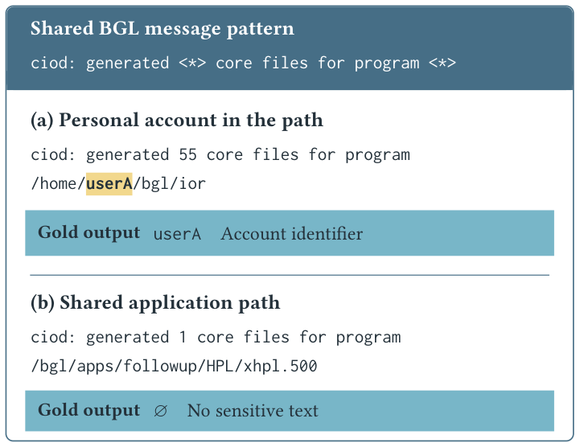
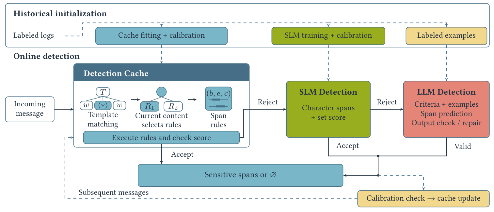
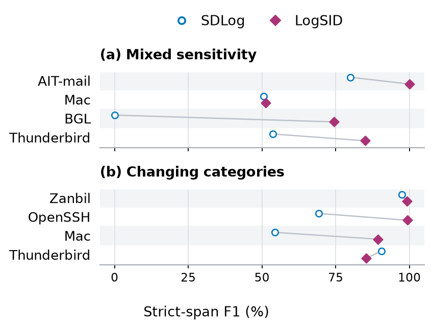
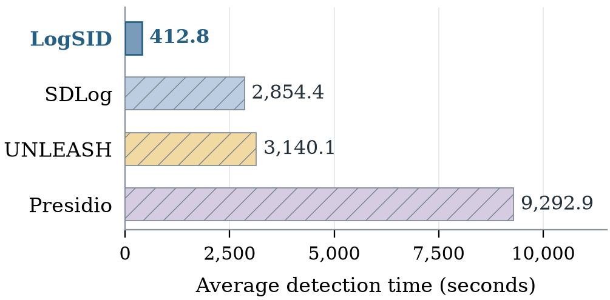

LogSID: Detecting Sensitive Information
in Large-Scale Logs
LogSID detects sensitive text in individual log messages by combining a learned cache, a small language model, and selective LLM detection. The study constructs a benchmark of 32,983,908 messages from eight sources and evaluates character-level sensitive-span detection on chronologically held-out logs.
Source code is available on GitHub. Datasets are available on Zenodo.
Abstract
Logs support troubleshooting and analysis across teams, but sharing them can expose sensitive information. Similar structures can contain different sensitive spans or none at all, making field-format matching or one label assignment per template insufficient. LogSID reuses content-dependent span-localization rules through a learned cache. A small language model handles messages without an accepted cache result; an LLM is invoked only when the small model's complete prediction is not accepted. Historical annotations initialize the cache, train the small model, and calibrate acceptance rules, while online cache updates support subsequent messages without retraining the small model.
What is the task in LogSID?
Identify the sensitive text and its categories in each log message. The example below shows why two messages with the same pattern can require different predictions.

userA is sensitive in (a); (b) has no annotated sensitive text. The account name is pseudonymized. Full-size figure ↗How does LogSID work?
A message first reaches the detection cache. Only messages without an accepted cache or small-model result proceed to the next stage. Checked model outputs can update the cache for subsequent messages.

The LogSID Benchmark
The benchmark covers eight log sources and annotates sensitive text in both fixed wording and variable values. The taxonomy defines 18 categories; 12 occur in the collected data.
Scroll horizontally to view all columns →
| Source | Logs | Templates | Sensitive (%) | Categories | Mixed | Varying |
|---|---|---|---|---|---|---|
| Zanbil | 10,365,152 | 11 | 100.00 | 9 | 0 | 6 |
| Apache | 51,978 | 29 | 59.81 | 2 | 0 | 0 |
| AIT-mail | 382,117 | 27 | 97.81 | 4 | 1 | 1 |
| OpenSSH | 638,947 | 38 | 94.06 | 3 | 0 | 9 |
| HealthApp | 212,394 | 156 | 83.99 | 4 | 0 | 0 |
| Mac | 100,314 | 626 | 4.94 | 5 | 3 | 8 |
| BGL | 4,631,261 | 320 | 3.04 | 2 | 11 | 11 |
| Thunderbird | 16,601,745 | 1,241 | 20.61 | 5 | 4 | 18 |
| Total | 32,983,908 | 2,448 | 45.83 | 12 | 19 | 53 |
Sensitive (%): messages with at least one sensitive annotation. Categories: observed categories; the total is the union across sources. Mixed: templates containing both sensitive and non-sensitive messages. Varying: templates with varying category presence. AIT-mail contains simulated-user activity on real services in a testbed.
Experimental Results
Evaluation uses the chronologically held-out 80% of each source: 26,387,130 test messages in total. Precision, recall, and F1 require strict agreement on span boundaries and category.
Scroll horizontally to view all columns →
| Source | SDLog | UNLEASH | GLiNER-PII | Presidio | LogSID | ||||||||||
|---|---|---|---|---|---|---|---|---|---|---|---|---|---|---|---|
| P | R | F1 | P | R | F1 | P | R | F1 | P | R | F1 | P | R | F1 | |
| Zanbil | 99.251 | 95.740 | 97.464 | 94.237 | 92.164 | 93.189 | — | — | — | 7.188 | 34.734 | 11.911 | 99.974 | 98.349 | 99.155 |
| Apache | 99.994 | 99.998 | 99.996 | 99.647 | 99.923 | 99.785 | 0.000 | 0.000 | 0.000 | 75.564 | 50.000 | 60.180 | 99.977 | 99.981 | 99.979 |
| AIT-mail | 99.524 | 76.114 | 86.259 | 99.630 | 76.114 | 86.299 | 8.453 | 3.698 | 5.145 | 2.388 | 1.284 | 1.670 | 99.583 | 96.743 | 98.142 |
| OpenSSH | 98.868 | 54.342 | 70.135 | 88.081 | 47.975 | 62.117 | 6.629 | 2.906 | 4.041 | 61.522 | 44.836 | 51.870 | 98.938 | 99.947 | 99.440 |
| HealthApp | 98.719 | 99.047 | 98.883 | 85.443 | 75.424 | 80.121 | 0.000 | 0.000 | 0.000 | 0.000 | 0.000 | 0.000 | 99.937 | 96.501 | 98.189 |
| Mac | 52.108 | 59.120 | 55.393 | 52.446 | 46.590 | 49.345 | 5.777 | 14.384 | 8.243 | 3.031 | 51.718 | 5.727 | 98.988 | 88.925 | 93.687 |
| BGL | 0.000 | 0.000 | 0.000 | 10.062 | 9.009 | 9.507 | 0.000 | 0.000 | 0.000 | 0.000 | 0.000 | 0.000 | 61.575 | 84.318 | 71.174 |
| Thunderbird | 98.913 | 82.049 | 89.695 | 7.126 | 16.467 | 9.947 | 1.216 | 1.363 | 1.285 | 0.119 | 0.200 | 0.149 | 99.982 | 74.618 | 85.458 |
| Mean | 80.922 | 70.801 | 74.728 | 67.084 | 57.958 | 61.289 | 3.154 | 3.193 | 2.674 | 18.727 | 22.847 | 16.438 | 94.869 | 92.423 | 93.153 |
Bold and underlined values indicate the best and second-best results. Mean P/R/F1 are averaged separately with equal weight per source. GLiNER-PII includes seven available sources; other methods include all eight. — denotes an evaluation excluded because full-test detection was projected to exceed six hours; it provides no measured timeout or score. SDLog and UNLEASH use the task adaptations evaluated in the paper.
LogSID achieves 93.15% mean source F1. Its advantage varies by workload: SDLog is stronger on Apache, HealthApp, and Thunderbird, while LogSID improves over SDLog on the other five sources.
Context-sensitive decisions

Detection time
